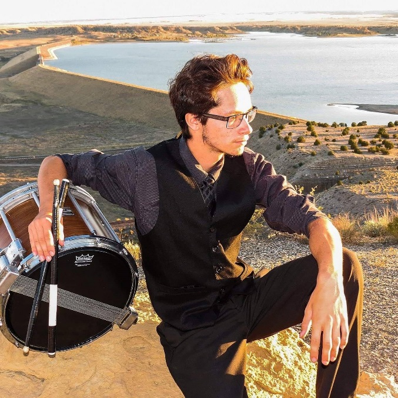

 Hi, I'm Michael Manzanares. I have been behind the drum kit for about 14 years now. It wasn't until my sophomore year of high school when I started to become really interested in jazz drumming. Towards the end of high school, I got the chance to play in the first annual All-City Jazz Band. I'm always trying to be open-minded about how I approach new styles that I'm not comfortable with. Or working on different ways to express myself with my drumming. With that being said, I'm very grateful to be a part of this experience and I'm looking forward to the ending result of PoC.